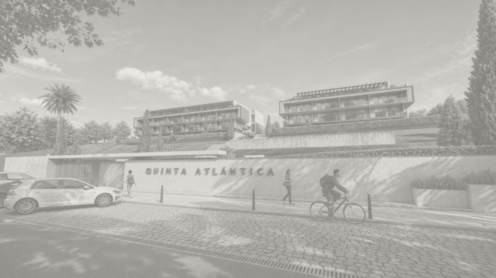

Arquitectura, vista antes de construirse.


Visualización arquitectónica desde Santander: luz, materia y calma.


(Proceso)
[ falta el clay real ]Del modelo a la imagen


ClayFinal(En cifras)
El estudio en cifras
16+Años de experiencia
Visualizando arquitectura, interiores y promociones inmobiliarias.
[ 000 ]Proyectos entregados
Desde una sola imagen hasta kits de venta completos.
02Rondas de cambios incluidas
Incluidas en cada precio cerrado, antes de cualquier extra.
[ 00 ]Clientes recurrentes
Promotoras y estudios que vuelven para la siguiente fase.
(Servicios)Todos los servicios →
Exteriores
Imágenes que sitúan el edificio en su contexto real —luz, vegetación, escala y calle— antes de colocar el primer ladrillo.
Interiores
Espacios amueblados, iluminados y estilizados para que tu cliente entienda —y apruebe— un interior antes de comprar o construir nada.
Animación
Recorridos y vuelos que muestran un edificio en movimiento, con una cámara pausada que sigue la forma en que las personas lo recorrerán de verdad.
Material comercial
Planos en color, infografías y piezas que convierten una promoción en algo fácil de entender, presentar y vender.


(Proceso y tarifas)
Ver cómo trabajo →
Un precio cerrado y un calendario semana a semana, antes de empezar.
¿Tienes un proyecto en mente?
Hablemos →